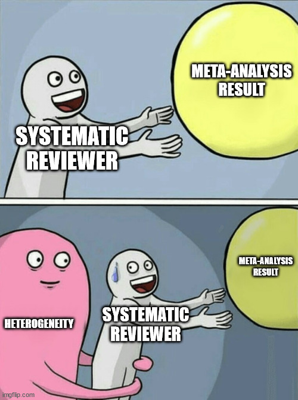
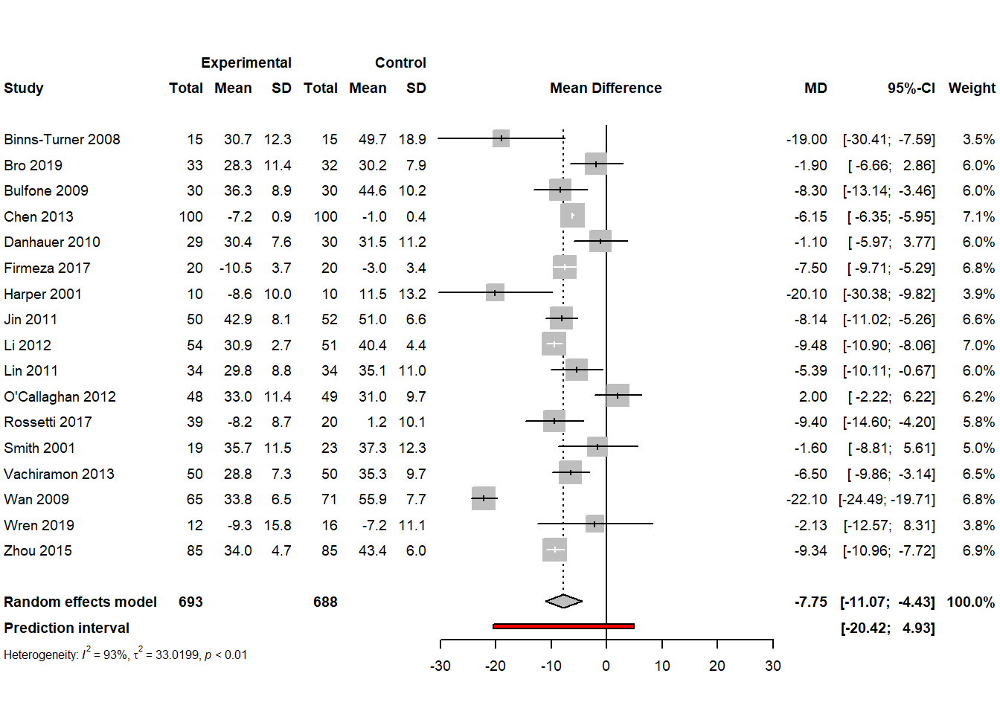
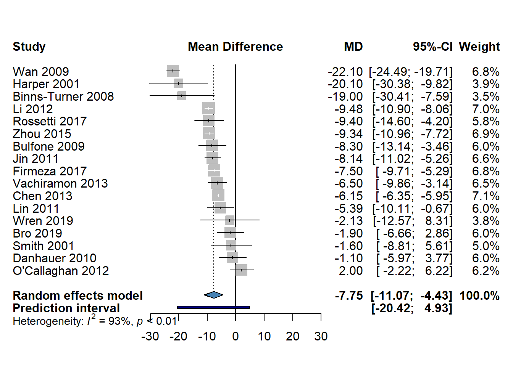

This section will cover methods of combining measures of effect together to calculate an overall average or pooled meta-analysis estimate. When conducting a random-effects meta-analysis, it is important to quantify and explore the between-study heterogeneity, or differences in the effect sizes across studies that are due to study differences compared to sampling error. We display the results of a meta-analysis using a forest plot figure to facilitate interpretation and visualization of effects, variation, and study weights.

8.1 Pooling Measures of Effect
In the previous chapter, we reviewed the basics of meta-analysis, including differences between fixed-effect and random-effects models. We will now cover procedures for conducting meta-analysis for different types of outcome data. All examples will use the meta package in R.
The most common method of pooling measures of effect is called the generic inverse-variance method, the formula for which was provided in Chapter 7. In this method, studies are weighted by the inverse of their precision. This method is used for continuous data (e.g., mean difference, SMD), and can also be used for dichotomous data. It is also the method used when conducting meta-analysis on pre-calculated measures of effect (e.g., odds ratios, risk ratios).
Change-From-Baseline Data
Analyses of an intervention based on a change from baseline can be more efficient, increasing precision of estimates. They are ideally analyzed by including the baseline measurement as a covariate in a regression analysis or ANCOVA. In meta-analysis, change-from-baseline scores and post-intervention values can be combined in the same analysis if using a raw MD outcome. However, they should not be combined when using a SMD outcome, as the standard deviations are not comparable.
When analyzing dichotomous raw data (e.g., number of events and sample size in each comparison group), there are alternative approaches available. The most common of these is the Mantel-Haenszel method. This method is preferred for dichotomous data, especially when the event is rare or when the sample size is small. The Peto odds ratio method is another approach, but it has more limitations and can only be used to calculate odds ratios.
One issue for dichotomous outcomes is that there may be zero events in one or both groups. In this case, the traditional, and often default approach in meta-analysis software, is to replace zero values with 0.5 (continuity correction). However, this correction is only required when using the generic inverse-variance approach; it should not be used when using the other methods.
In the meta package, the following functions can be used for meta-analysis of different types of data inputs:
metagen for pre-calculated measures of effect
metacont for continuous data
metabin for dichotomous data
metaprop for prevalence (proportion) data
metainc for incidence rate ratio or incidence rate difference data
metarate for incidence data in a single group
metacor for correlation coefficients
Note that we will not cover meta-analysis of all of these data types. If interested to see examples of others, you can visit the online book Doing Meta-Analysis in R.
Continuous Data Meta-Analysis Example
To illustrate how to conduct a meta-analysis using continuous data, we will examine part of the dataset from a systematic review of music interventions to improve various health outcomes in people with cancer (Bradt et al. 2021). Specifically, we will examine 17 studies from that review that evaluated music interventions plus standard care compared to standard care alone in adults to improve anxiety. Anxiety was measured in all studies using the Spielberger State Anxiety Index (STAI) scale, with lower scores representing lower anxiety.
Code
pacman::p_load( rio, # load in an Excel file here, # loading data using relative path tidyverse, # data management meta, # meta-analysis DT # to visualize the dataset )Bradt_2021 <-import(here("assets", "Bradt_2021.xlsx"))Bradt_2021 |>datatable(rownames =FALSE,options =list(columnDefs =list(list(className ='dt-center', targets =0:4))))
We can see that each study reported the mean anxiety score, SD, and sample size in each comparison group. Because all studies measured the outcome on the same scale, we can calculate a raw mean difference (MD). For continuous data, we will use the metacont function.
Code
Bradt_meta <- Bradt_2021 |>metacont(n.e = int_n, # number in intervention groupmean.e = int_mean, # intervention group meansd.e = int_sd, # intervention group SDn.c = con_n, # number in control groupmean.c = con_mean, # control group meansd.c = con_sd, # control group SDstudlab = study, # study ID columnsm ="MD", # summary measure (MD or SMD)random =TRUE, # conduct random-effects analysisfixed =FALSE, # do not conduct a fixed-effect analysismethod.tau ="REML", # method of calculating tauhakn =TRUE, # apply the Hartung-Knapp adjustmenttitle ="Music Intervention and Anxiety")summary(Bradt_meta)
Review: Music Intervention and Anxiety
MD 95%-CI %W(random)
Binns-Turner 2008 -19.0000 [-30.4116; -7.5884] 3.5
Bro 2019 -1.9000 [ -6.6561; 2.8561] 6.0
Bulfone 2009 -8.3000 [-13.1441; -3.4559] 6.0
Chen 2013 -6.1500 [ -6.3510; -5.9490] 7.1
Danhauer 2010 -1.1000 [ -5.9697; 3.7697] 6.0
Firmeza 2017 -7.5000 [ -9.7117; -5.2883] 6.8
Harper 2001 -20.1000 [-30.3764; -9.8236] 3.9
Jin 2011 -8.1400 [-11.0220; -5.2580] 6.6
Li 2012 -9.4800 [-10.8968; -8.0632] 7.0
Lin 2011 -5.3900 [-10.1061; -0.6739] 6.0
O'Callaghan 2012 2.0000 [ -2.2163; 6.2163] 6.2
Rossetti 2017 -9.4000 [-14.6008; -4.1992] 5.8
Smith 2001 -1.6000 [ -8.8116; 5.6116] 5.0
Vachiramon 2013 -6.5000 [ -9.8650; -3.1350] 6.5
Wan 2009 -22.1000 [-24.4885; -19.7115] 6.8
Wren 2019 -2.1300 [-12.5696; 8.3096] 3.8
Zhou 2015 -9.3400 [-10.9550; -7.7250] 6.9
Number of studies combined: k = 17
Number of observations: o = 1381
MD 95%-CI t p-value
Random effects model -7.7482 [-11.0659; -4.4306] -4.95 0.0001
Quantifying heterogeneity:
tau^2 = 33.0199 [16.0833; 94.6051]; tau = 5.7463 [4.0104; 9.7265]
I^2 = 93.4% [90.9%; 95.3%]; H = 3.91 [3.32; 4.59]
Test of heterogeneity:
Q d.f. p-value
244.16 16 < 0.0001
Details on meta-analytical method:
- Inverse variance method
- Restricted maximum-likelihood estimator for tau^2
- Q-Profile method for confidence interval of tau^2 and tau
- Hartung-Knapp (HK) adjustment for random effects model (df = 16)
Based on this analysis, we can see that the anxiety scores were lower among participants that received music interventions in addition to standard care vs. standard care alone.
If we wanted to change any settings, we can use the update.meta function to update our analysis. For example, we could run an updated analysis to compare how the results might change with a different method of calculating \(\tau^2\).
Code
Bradt_meta_update <-update.meta(Bradt_meta,method.tau ="PM") # Update to Paule-Mandel method# Compare pooled estimates and tau^2 valuestibble(Method =c("REML", "PM"),Pooled_MD =c(Bradt_meta$TE.random, Bradt_meta_update$TE.random),Pooled_SE =c(Bradt_meta$seTE.random, Bradt_meta_update$seTE.random),Tau2 =c(Bradt_meta$tau2, Bradt_meta_update$tau2))
We obtain slightly different results when using the alternative method of calculating \(\tau^2\).
Dichotomous Data Meta-Analysis Example
To illustrate how to conduct a meta-analysis using continuous data, we will examine a dataset of 136 studies used in a meta-analysis of the effectiveness of nicotine replacement therapy vs. control for smoking cessation (Hartmann‐Boyce et al. 2018), as prepared by White et al. in the metadat repository.
As can been seen above, the dataset contains information from each study on the number of participants in each group that continued to abstain from smoking at 6+ months of follow-up. Also included is a column that specifies the type of treatment received. Since the data are dichotomous and all include raw data, we can calculate an measure of effect using the Mantel-Haenszel method. We will use the metabin function, but first we will subset our data to only conduct the meta-analysis on studies that investigated the patch as an intervention.
Code
Hartmann_meta <- Hartmann_2018 |>filter(treatment =="patch") |># subset data for meta-analysis metabin(event.e = x.nrt, # events in intervention groupn.e = n.nrt, # number in intervention groupevent.c = x.ctrl, # events in control groupn.c = n.ctrl, # number in control groupstudlab = study, # study ID columnsm ="RR", # summary measure (OR or RR)method ="MH", # use the Mantel-Haenszel methodrandom =TRUE, # conduct random-effects analysisfixed =FALSE, # do not conduct a fixed-effect analysismethod.tau ="PM", # method of calculating tauhakn =TRUE, # apply the Hartung-Knapp adjustmentMH.exact =TRUE, # do not apply a continuity correctiontitle ="Nicotine Patch and Smoking Cessation")summary(Hartmann_meta)
In this analysis, we can see that participants in the intervention group were more likely to continue to abstain from smoking at follow-up compared to those in the control group.
8.1.1 Prevalence and Incidence Data
Meta-analysis of prevalence and incidence data uses a slightly different approach than continuous and dichotomous data. The recommended approach for synthesizing such data is to use a generalized linear mixed-effects model (GLMM)(Schwarzer et al. 2019). Prevalence data should be logit transformed prior to meta-analysis, while incidence data should be log transformed (this is done automatically in the meta package). For prevalence data, the GLMM approach fits an intercept-only logistic regression to the data, with a random-effect to account for the between-study variation. A Poisson GLMM model is used for incidence data.
Using the GLMM approach has some limitations. It is not possible to obtain individual study weights using this method. Additionally, there is only one method to calculate \(\tau^2\), the maximum-likelihood (ML) estimator, and there will be no confidence internals for \(\tau^2\). In case those details are needed, the inverse-variance approach can be used with the arcsine or logit transformation for prevalence data, or the log transformation for incidence data.
Prevalence Meta-Analysis Example
An example is shown below of a meta-analysis of the prevalence of selected outcomes from a systematic review of the knowledge, behaviours, and training of restaurant and food service personnel toward food allergies and Celiac disease (Young and Thaivalappil 2018).
We can see that some article and study characteristics are also included in this dataset. For these data, we will subset the training outcome only for illustration purposes. This outcome shows the proportion of participants (i.e., restaurant and food service staff) in each study that reported receiving training about food allergies.
Review: Food Allergy Training Prevalence
proportion 95%-CI
79 0.4200 [0.3220; 0.5229]
80 0.3333 [0.2374; 0.4405]
81 0.3057 [0.2416; 0.3759]
82 0.1500 [0.0571; 0.2984]
83 0.4933 [0.3758; 0.6114]
84 0.7909 [0.7030; 0.8626]
85 0.3668 [0.3043; 0.4328]
86 0.4085 [0.3701; 0.4477]
87 0.1709 [0.1331; 0.2145]
88 0.4557 [0.3998; 0.5124]
89 0.2500 [0.1766; 0.3357]
90 0.2609 [0.1834; 0.3510]
Number of studies combined: k = 12
Number of observations: o = 2382
Number of events: e = 871
proportion 95%-CI
Random effects model 0.3587 [0.2578; 0.4739]
Quantifying heterogeneity:
tau^2 = 0.5203; tau = 0.7213; I^2 = 93.2% [89.9%; 95.4%]; H = 3.84 [3.15; 4.67]
Test of heterogeneity:
Q d.f. p-value Test
161.87 11 < 0.0001 Wald-type
195.78 11 < 0.0001 Likelihood-Ratio
Details on meta-analytical method:
- Random intercept logistic regression model
- Maximum-likelihood estimator for tau^2
- Random effects confidence interval based on t-distribution (df = 11)
- Logit transformation
- Clopper-Pearson confidence interval for individual studies
We can see the pooled prevalence value is ~36%, with a 95% CI of 26-47%.
8.2 Assessing Heterogeneity
Heterogeneity refers to differences between studies that is beyond what we would expect from chance (or random error) alone. It can be due to differences in how interventions (exposures) and outcomes were defined, implemented, and measured, differences in the characteristics of the populations assessed, or other factors (e.g., differences in study methods, context, and bias).
There is a \(\chi2\) statistical test for heterogeneity, called Cochran’s Q, that has been traditionally used and is included in the the R meta results output. This test evaluates whether this is more variation than would be expected by sampling error alone. However, this test has lower power when the number of studies is small. Additionally, its use is controversial, as some argue that since there are always differences expected between studies, some heterogeneity will always be present.
For this reason, the \(I^2\) statistic was developed to quantify heterogeneity (J. P. T. Higgins et al. 2003). The formula, based on Cochran’s \(Q\), is shown below, with \(N\) referring to the number of studies in the analysis:
\[
I^2 = \frac{Q-(N-1)}{Q}
\]
\(I^2\) refers to the percentage of variation in measures of effect across studies that is due to heterogeneity rather than sampling error. While thresholds are often used in practice, these are discouraged. Instead, the amount of heterogeneity that is important depends on the content (e.g., magnitude and direction of effects, strength of evidence for heterogeneity). In general, \(I^2\) values of 0-40% might not be important, values of 75-100% usually indicate considerable heterogeneity, while values in 30-60% and 50-90% might indicate moderate to substantial heterogeneity (J. Higgins et al. 2022).
However, because \(I^2\) is a relative measure, it should not be the only measure of heterogeneity reported. We can also examine \(\tau\) and its 95% CI, which represents the estimated SD of the true effects across studies (it is on the same scale as the measure of effect used in the analysis).
Prediction intervals (PIs) are recommended to be included alongside other estimates of heterogeneity. A 95% PI estimates the range of values the measure of effect would be expected to fall within in 95% of similar studies that might be conducted in the future. In cases of heterogeneity, the PI covers a wider range of values than a CI. In R meta, we can add a PI to our output by adding the argument prediction = TRUE to the function input options.
We will explore in the next session Chapter 9 how to investigate different causes of heterogeneity using subgroup analysis and meta-regression.
Heterogeneity Example
We will go back to our first meta-analysis example that examined the effect of music interventions plus standard care vs. standard care alone to reduce anxiety levels among people with cancer (Bradt et al. 2021). We will update the analysis to include a prediction interval (PI), then interpret the heterogeneity.
Review: Music Intervention and Anxiety
Number of studies combined: k = 17
Number of observations: o = 1381
MD 95%-CI t p-value
Random effects model -7.7482 [-11.0659; -4.4306] -4.95 0.0001
Prediction interval [-20.4226; 4.9262]
Quantifying heterogeneity:
tau^2 = 33.0199 [16.0833; 94.6051]; tau = 5.7463 [4.0104; 9.7265]
I^2 = 93.4% [90.9%; 95.3%]; H = 3.91 [3.32; 4.59]
Test of heterogeneity:
Q d.f. p-value
244.16 16 < 0.0001
Details on meta-analytical method:
- Inverse variance method
- Restricted maximum-likelihood estimator for tau^2
- Q-Profile method for confidence interval of tau^2 and tau
- Hartung-Knapp (HK) adjustment for random effects model (df = 16)
- Prediction interval based on t-distribution (df = 15)
We can see in the results that the \(Q\) test for heterogeneity is significant, and the \(I^2\) value is also very high at ~93% (95% CI: 90.9-95.3%). While the pooled measure of effect (MD) has a 95% CI that excludes the null, suggesting a consistent positive effect of the music intervention, the PI crosses above zero. This indicates that we cannot rule out that the intervention might have no effect or a negative effect in future studies.
8.3 Forest Plots
Forest plots are the most common way to visualize meta-analysis results. They show the measure of effect estimate, confidence interval, and weight of each study, and the pooled or average estimate at the bottom. They can also include a prediction interval.
Below we will create a forest plot from the meta-analysis of music interventions on reducing anxiety levels in people with cancer, from the earlier example (Bradt et al. 2021). Using the meta package, we can generate a forest plot for our saved meta-analysis results using the forest.meta function.
Code
Bradt_meta |>forest.meta(digits.mean =1, # Limiting significant digits on left columnsdigits.sd =1,fontsize =7, # Decrease fontsize so all text fits on imagespacing =0.9# Decrease spacing to ensure text fits )

We can clean up the display of this plot by removing the data on the left side of the plot, and also adding in a prediction interval at the bottom. Other customization options can be made as needed.
Code
Bradt_meta |>forest.meta(sortvar = TE, # sort studies by effect sizeprediction =TRUE, # add prediction intervalprint.tau2 =FALSE, # do not show tau2 at the bottomleftcols ="study", # show only the study ID on the leftleftlabs ="Study", # relabel study columncol.diamond ="steelblue", # colour customizationcol.predict ="darkblue",spacing =0.85)

Meta-Analysis Exercise
We will load data from the Young et al. (2019) systematic review and meta-analysis of the effectiveness of food handler training and education interventions. The dataset can be loaded and visualized as per below:
Code
# First load necessary packagespacman::p_load( rio, # load in an Excel file here, # loading data using relative path tidyverse, # data management meta, # meta-analysis DT # to visualize the dataset )Young_2019 <-import(here("assets", "Young_2019_ma.xlsx"))Young_2019 |>datatable(rownames =FALSE,options =list(columnDefs =list(list(className ='dt-center', targets =0:4)))) |>formatStyle(columns =colnames(Young_2019), fontSize ='70%')
We can see that there are 214 unique outcomes, with multiple outcomes reported in many studies. We will first conduct a meta-analysis of a subset of data that only examines RCTs and behaviour outcomes:
Code
Young_2019_meta <- Young_2019 |>filter(study_design =="RCT"& outcome =="Behaviour") |>metagen(TE = g,seTE = g_se,studlab = author_year,sm ="SMD", random =TRUE,fixed =FALSE,method.tau ="REML",hakn =TRUE,title ="Food Handler Training and Behaviour - RCTs")summary(Young_2019_meta)
Review: Food Handler Training and Behaviour - RCTs
SMD 95%-CI %W(random)
Craggs-Dino (2002) 0.0787 [-0.8962; 1.0537] 8.1
Maung et al. (2017) 0.1008 [-0.8240; 1.0257] 8.9
Nik Husain et al. (2016) 0.3560 [-0.1716; 0.8836] 27.5
Nik Husain et al. (2016) 0.0030 [-0.5195; 0.5255] 28.0
Nik Husain et al. (2016) 0.3670 [-0.1606; 0.8946] 27.5
Number of studies combined: k = 5
SMD 95%-CI t p-value
Random effects model (HK) 0.2149 [-0.0135; 0.4434] 2.61 0.0593
Quantifying heterogeneity:
tau^2 = 0 [0.0000; 0.1448]; tau = 0 [0.0000; 0.3805]
I^2 = 0.0% [0.0%; 79.2%]; H = 1.00 [1.00; 2.19]
Test of heterogeneity:
Q d.f. p-value
1.36 4 0.8513
Details on meta-analytical method:
- Inverse variance method
- Restricted maximum-likelihood estimator for tau^2
- Q-Profile method for confidence interval of tau^2 and tau
- Hartung-Knapp (HK) adjustment for random effects model (df = 4)
Examine and interpret the results.
How many studies and unique outcomes were included?
What does the overall evidence say about the intervention?
How much heterogeneity is present? Is it significantly different than zero?
How does the result change if you use a different method of calculating \(\tau^2\)?
Create a customized forest plot to visualize the results and include the prediction interval. How would you interpret the interval?
Now conduct a meta-analysis for the subset of non-randomized studies and the inspection scores outcome. Answer the same questions above for this analysis.
Bradt, Joke, Cheryl Dileo, Katherine Myers-Coffman, and Jacelyn Biondo. 2021. “Music Interventions for Improving Psychological and Physical Outcomes in People with Cancer.”Cochrane Database of Systematic Reviews, no. 10. https://doi.org/10.1002/14651858.CD006911.pub4.
Hartmann‐Boyce, Jamie, Samantha C. Chepkin, Weiyu Ye, Chris Bullen, and Tim Lancaster. 2018. “Nicotine Replacement Therapy Versus Control for Smoking Cessation.”Cochrane Database of Systematic Reviews, no. 5. https://doi.org/10.1002/14651858.CD000146.pub5.
Higgins, J P T, S G Thompson, J J Deeks, and D G Altman. 2003. “Measuring Inconsistency in Meta-Analyses.”BMJ (Clinical Research Ed.) 327 (7414): 557–60. https://doi.org/10.1136/bmj.327.7414.557.
Higgins, JPT, J Thomas, J Chandler, M Cumpston, T Li, MJ Page, and VA Welch, eds. 2022. Cochrane Handbook for Systematic Reviews of Interventions. Cochrane. www.training.cochrane.org/handbook.
Schwarzer, Guido, Hiam Chemaitelly, Laith J. Abu-Raddad, and Gerta Rücker. 2019. “Seriously Misleading Results Using Inverse of Freeman-Tukey Double Arcsine Transformation in Meta-Analysis of Single Proportions.”Research Synthesis Methods 10 (3): 476–83. https://doi.org/10.1002/jrsm.1348.
Young, Ian, Judy Greig, Barbara J. Wilhelm, and Lisa A. Waddell. 2019. “Effectiveness of Food Handler Training and Education Interventions: A Systematic Review and Meta-Analysis.”Journal of Food Protection 82 (10): 1714–28. https://doi.org/10.4315/0362-028X.JFP-19-108.
Young, Ian, and Abhinand Thaivalappil. 2018. “A Systematic Review and Meta-Regression of the Knowledge, Practices, and Training of Restaurant and Food Service Personnel Toward Food Allergies and Celiac Disease.” Edited by Louise Emilsson. PLOS ONE 13 (9): e0203496. https://doi.org/10.1371/journal.pone.0203496.